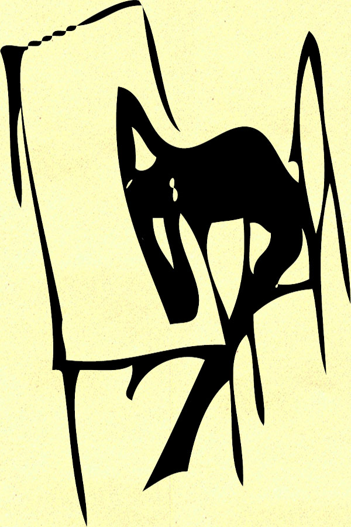

At home Franz Kafka would often feel that he had been punished for something that did not deserve punishing.
In The Trial a boy named Josef K. is met by officers and charged with a crime. K. is not told what the crime is or who is arresting him. The days following his accusation K.'s life gets ever stranger. He witnesses other people's crimes, others being punished, and crimes he might have committed.
The story ends when K. is thirty-one. Two men arrive at his home to execute him for his crime. He does not fight back, because by now K. believes that he is guilty of a crime and deserves death. The men take him to a quarry where they tell him that he is to kill himself. When he does no the two men execute him themself. his final words proclaim, "Like a dog!"
K. lived the same way a dog does. A dog is yelled at, but what is spoken is not understood. The dog has no way of knowing what they did wrong, but they come to understand that they did do something wrong. Then the punishment comes, and the dog is silenced. K. is very similar to the dog being punished. |
 |
|---|---|
Kafka and his father shared the relationship that K. and his prosecutors have. Kafka would feel that he had been punished for a crime that he could never understand. After a while Kafka would accept the unavoidable punishment. He would then feel that had done something wrong and feel guilty for the crime. |
|
The Trial was published after Kafka's death. |